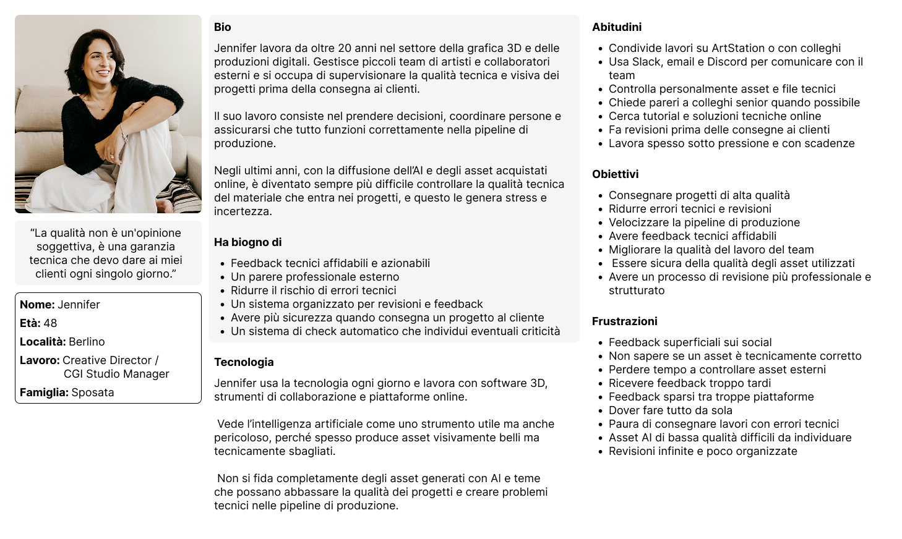
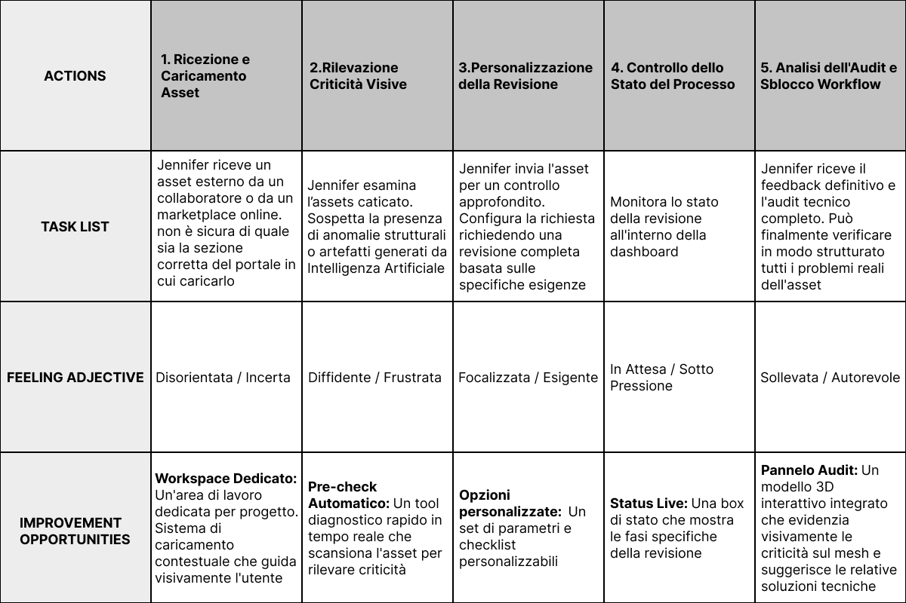
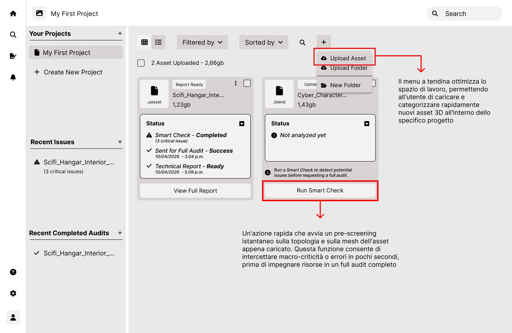
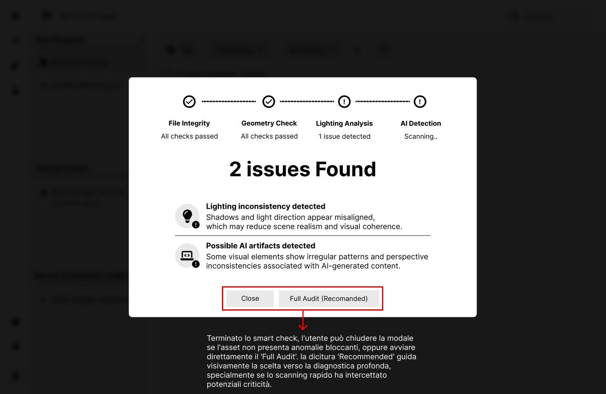
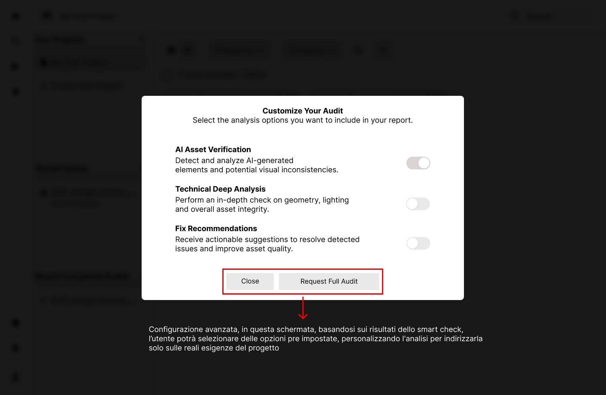

Nel settore della grafica 3D e della CGI, l'integrazione di asset tecnici "sporchi" o di bassa qualità rappresenta una criticità quotidiana e complessa. Questo scenario è stato ulteriormente amplificato dall'avvento dell'Intelligenza Artificiale: se da un lato l'IA ha potenziato e velocizzato i flussi di lavoro, dall'altro ha aumentato esponenzialmente il rischio di immettere nella pipeline modelli strutturalmente difettosi o contaminati da artefatti invisibili a un primo sguardo.
Questo prodotto nasce proprio da questa urgenza di mercato: rispondere al bisogno concreto dei professionisti del settore di ricevere feedback strutturati, analisi approfondite e aiuti risolutivi per blindare la qualità tecnica della produzione prima del render finale.


L’integrazione di asset "sporchi" e le anomalie invisibili introdotte dall’Intelligenza Artificiale innescano un loop frustrante di revisioni continue. Questa frammentazione genera pesanti e continui blocchi nel workflow.

Eliminare i blocchi nel workflow e azzerare le verifiche ridondanti, fornendo report strutturati e dettagliati in grado di rendere ogni feedback immediatamente azionabile.

UX/UI Lead & Front-End Developer. Ho guidato l'intero ciclo del prodotto: dalla ricerca con gli utenti alla progettazione dell'interfaccia, fino alla traduzione in codice pulito e scalabile

È stata condotta una ricerca sul campo intervistando gli stakeholder chiave e distribuendo sondaggi online a professionisti della grafica 3D, startup e freelance. Inizialmente il progetto era stato concepito come un semplice portale di feedback in stile Dribbble, dove gli utenti potevano mostrare i propri lavori e ricevere pareri dalla community. Tuttavia, la ricerca quantitativa e qualitativa ha fatto emergere necessità molto più profonde e complesse, riassunte perfettamente dalle parole di un utente intervistato:
Non mi serve a nulla ricevere un feedback in ritardo e in modo superficiale
Questo insight fondamentale ha cambiato radicalmente la direzione del prodotto, trasformandolo da una vetrina social a uno strumento tecnico di diagnostica e ottimizzazione per la pipeline produttiva.
La qualità non è un'opinione soggettiva, è una garanzia tecnica che devo dare ai miei clienti ogni singolo giorno.
Jennifer è una direttrice creativa che ha bisogno di un modo per convalidare la qualità tecnica dei suoi materiali e ricevere un feedback professionale strutturato, in modo da poter evitare problemi tecnici, ridurre le revisioni e mantenere efficiente il suo flusso di lavoro.


Per analizzare al meglio il flusso di lavoro e gli ostacoli di Jennifer, ho scelto di strutturare una Future-State User Journey Map (focalizzata su prodotti previsti), ideale per soluzioni ancora in fase di progettazione.
Mappare un percorso frammentato — basato su passaggi obsoleti come la condivisione su forum, Discord o Dribbble per ricevere pareri generici — non avrebbe offerto spunti progettuali di reale valore. Questo modello, invece, delinea le tappe e i touchpoint essenziali del nostro ecosistema, permettendo di identificare dove e come Jennifer affronta le criticità maggiori e come l'interfaccia risponde a ogni sua esigenza.
Le caratteristiche individuate durante la fase di brainstorming hanno consolidato i dati emersi dalla ricerca strategica, permettendomi di strutturare una proposta di valore solida, coerente e focalizzata sulle reali necessità dei professionisti.
Analizzando la mappatura dei requisiti, spicca per importanza la prima macro-categoria: "Instant Workflow Optimization". Questa colonna evidenzia la centralità del Pre-Check nel nostro ecosistema: intercettare istantaneamente le criticità dell'asset prima che entrino nella pipeline è il fattore chiave per azzerare i blocchi operativi e garantire un flusso di lavoro fluido fin dal primo istante.

wireframe cartacei/digitali & studio d'usabilità
Questi fireframe cartacei, seppur minimali, sono abbastanza dettagliati nella loro struttura, essi rappresentano il workspace e l'interno del progetto, dove avviene caricamento asset e smart check.


Questo è il cuore operativo dell'esperienza utente. Questa schermata centralizzata è stata progettata per offrire un controllo totale e immediato sul flusso di lavoro: da qui l'utente può gestire l'inventario dei propri asset, caricarne di nuovi in pochi passaggi, monitorare in tempo reale lo stato di avanzamento dei report e avviare, per ogni singolo file, la funzionalità di Smart-Check.
Per progettare un tool che fosse immediatamente riconoscibile e ad alto impatto, ho analizzato i pattern UX di alcuni competitor indiretti, nello specifico software antivirus e strumenti di scansione.
Sfruttando questo modello mentale già familiare, l'utente è in grado di decodificare all'istante lo stato dello Smart-Check e l'entità delle criticità rilevate. Questa trasparenza visiva gli permette di prendere decisioni strategiche immediate, valutando in totale autonomia e con un solo sguardo se il file è sicuro o se è necessario richiedere un Full Audit approfondito.


Questa modal rappresenta il punto di transizione in cui i dati dello Smart-Check si trasformano in azione. Progettata per offrire la massima flessibilità, la schermata permette all'utente di customizzare l'audit approfondito in base alle criticità specifiche appena rilevate.
Prototipo interattivo a bassa fedeltà con l'obiettivo di testare sul campo la solidità dei flussi logici, l'architettura delle informazioni e la facilità di navigazione.
1. Upload: Caricamento e inserimento del nuovo asset all'interno del progetto.
2. Diagnostica Rapida: Avvio dello Smart-Check sull'asset appena caricato per intercettare i primi feedback e eventuali criticità.
3. Analisi delle Criticità: Identificazione dei problemi tecnici emersi e attivazione della richiesta di Full Audit.
4. Customizazzione: Personalizzazione dei parametri dell'audit avanzato e selezione delle opzioni specifiche per la richiesta di fix.

Tutti gli utenti coinvolti nel test hanno completato con successo il Task richiesto
Caricamento asset: Durante la prima fase del task, è emerso un problema di usabilità legato all'azione di caricamento dell'asset. Il pulsante iniziale, identificato solo da un'icona +, risultava poco intuitivo per gli utenti e rallentava l'avvio del workflow.
Modal upload asset: La finestra modale dedicata al caricamento dell'asset risultava eccessivamente scarna e priva di passaggi intermedi. Il flusso passava bruscamente da zero al file caricato, senza mostrare lo stato di avanzamento del caricamento stesso. Gli utenti hanno espresso chiaramente la necessità di una transizione più fluida e di feedback visivi immediati per monitorare e velocizzare il processo senza incertezze.
Personalizazzione dell'audit: L'attrito più significativo è emerso nella fase di personalizzazione dell'audit. Gli utenti non riuscivano a comprendere l'impatto reale delle singole opzioni selezionabili nella modal: la mancanza di un feedback visivo immediato (legato a fattori come tempo di calcolo, complessità o priorità) non giustificava una scelta mirata. Di conseguenza, l'utente tendeva a selezionare indiscriminatamente tutte le voci disponibili, vanificando di fatto lo scopo del sistema di ottimizzazione e della customizzazione stessa.
Mockup & Prototipo
Il primo mockup mostra l'esatta allocazione dell'azione di upload e del relativo menu a tendina. Per abbattere completamente l'esitazione riscontrata in fase di test, ho ottimizzato l'usabilità e l'accessibilità del componente: l'icona ambigua è stata sostituita da un pulsante solido integrato con una label testuale chiara ("Carica Asset"). Questo intervento ha rimosso ogni barriera cognitiva, guidando l'occhio dell'utente verso l'azione primaria fin dal primo accesso all'hub.

Questo mockup illustra la riprogettazione completa della finestra modale dedicata al caricamento dell'asset. Per velocizzare il flusso e renderlo il più flessibile possibile, ho introdotto il pattern del Drag & Drop, mantenendo parallela la possibilità di selezionare il file direttamente dal dispositivo. Il processo è stato interamente automatizzato: non appena il file viene rilasciato dall'utente, il sistema avvia l'upload in tempo reale senza richiedere ulteriori azioni o clic di conferma. Inoltre, per garantire la massima accessibilità e supporto nel momento critico del caricamento, ho integrato una sezione di Help Center contestuale direttamente all'interno della modal.


Quest'ultimo mockup mostra la risposta progettuale al problema più critico emerso nei test. Dopo aver condotto ulteriori colloqui approfonditi con gli utenti per comprendere a fondo le loro necessità, è emerso che il fattore decisionale più importante era il tempo. Ho quindi integrato un sistema di feedback visivo dinamico e in tempo reale che mostra la stima delle tempistiche di elaborazione in base alle opzioni e alle richieste custom selezionate nella modal. Rendere evidente questo dato permette a Jennifer e al suo team di valutare immediatamente l'impatto di ogni singola scelta sulle scadenze di progetto e sulle milestone di release, trasformando la customizzazione in uno strumento decisionale strategico e trasparente.


Per offrire una panoramica dettagliata dell'esperienza finale, ho suddiviso il prototipo ad alta fedeltà in due flussi interattivi distinti e mirati. Il focus di questo primo prototipo si concentra sull'ingresso dell'utente nel proprio spazio di lavoro e sulla gestione iniziale dei file:
1. Il Flusso: Mostra il percorso lineare in cui l'utente naviga il proprio workflow ed entra all'interno del progetto specifico.
2. L'Ottimizzazione: Da qui, viene messa in mostra la nuova logica di caricamento e upload. Grazie alla drastica riduzione dei passaggi intermedi e all'introduzione di feedback visivi in tempo reale, il processo si conclude fluidamente fino alla visualizzazione immediata dell'asset correttamente inserito e pronto all'uso.


Il secondo prototipo interattivo si focalizza sul cuore analitico e decisionale dell'applicazione, mostrando la transizione fluida dalla diagnostica automatica alla richiesta di intervento mirato:
1. Il Flusso: Questo scenario guida l'utente attraverso l'avvio dello Smart-Check e la visualizzazione immediata delle criticità riscontrate sull'asset (sfruttando il modello mentale familiare dei sistemi di scansione).
2. Consultazione e Storico: Il percorso culmina con l'apertura della modal per la personalizzazione dell'audit. Qui l'utente può interagire con le diverse opzioni di configurazione, sperimentando in tempo reale il funzionamento del feedback visivo dinamico che stima i tempi di attesa e di elaborazione in base alle scelte selezionate.
Workflow più fluido: Grazie all'introduzione di report dettagliati, feedback mirati e indicazioni chiare sui fix tecnici da eseguire, sono stati completamente eliminati i colli di bottiglia storici del processo. L'utente non deve più fare i conti con arresti improvvisi del workflow, errori imprevisti o problemi strutturali che compromettevano la qualità dei rendering finali. Il risultato è una pipeline lineare e il pieno rispetto delle tempistiche di consegna.
Qualità nel proprio lavoro: Automatizzando la fase di diagnostica, l'interfaccia ha sollevato gli utenti da un carico operativo alienante. Ora il team può abbandonare il controllo manuale e ripetitivo dei singoli asset, azzerando le sviste umane. Questo risparmio di tempo si traduce nella libertà di concentrarsi esclusivamente sulla qualità creativa del proprio lavoro, eliminando alla radice revisioni infinite, stress da release e ritardi sistemici.
Questo progetto ha avuto un significato profondo che va ben oltre la pura esecuzione tecnica. Tocca da vicino una delle sfide più grandi che noi professionisti del settore tech abbiamo a cuore oggi: la coesistenza tra l'automazione, l'Intelligenza Artificiale e il lavoro dell'uomo. Riuscire a mappare, intercettare e correggere asset qualitativamente carenti o corrotti non è solo un fatto di efficienza. Significa proteggere e valorizzare il talento umano, liberando i professionisti dal peso di errori tecnici alienanti per rimettere al centro la loro reale capacità espressiva e creativa.
Cosa farei meglio (Next Steps): Se guardo indietro, riconosco che i vincoli stringenti di tempo e budget hanno impattato la prima fase di wireframing digitale e prototipazione low-fi. Ho disegnato un flusso sicuramente fluido nella sua macro-struttura, ma non esente da difetti e ingenuità di usabilità.
I test sul campo lo hanno dimostrato: gli utenti hanno completato i task e apprezzato l'idea, ma hanno sollevato dubbi sacrosanti sui feedback visivi e sulla trasparenza del sistema. La vera lezione, per me, è stata qui. Non mi sono fermato: grazie a una forte attitudine all'iterazione continua e a colloqui approfonditi post-test, ho usato quegli stessi feedback negativi come carburante per riprogettare la UI ad alta fedeltà, risolvendo chirurgicamente ogni criticità emersa. È la prova che un buon design non nasce mai perfetto, ma lo diventa ascoltando le persone.